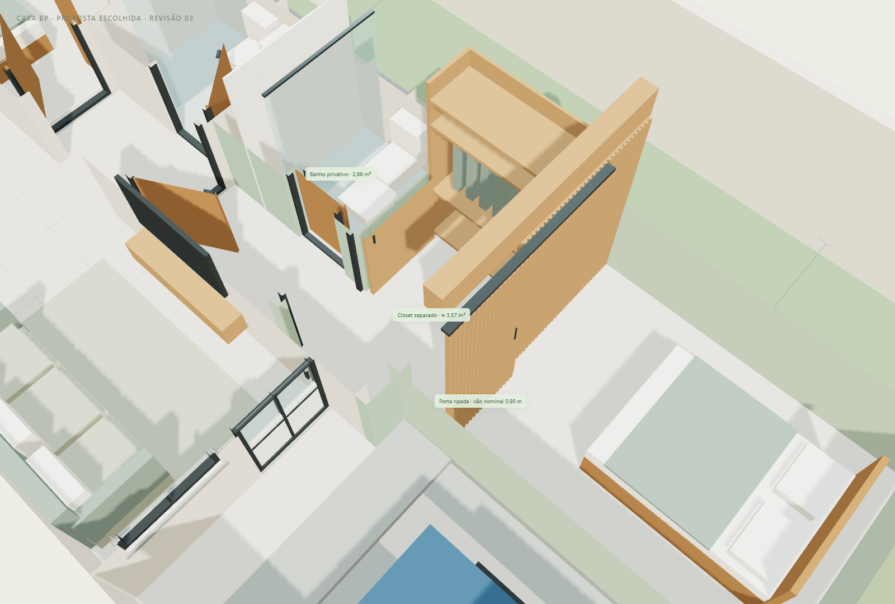

A parte nova da suíte recebe mais 0,40 m de largura e 1,40 m de comprimento em relação à revisão 02: o avanço frontal total passa de 2,60 para 4,00 m. O closet deixa de ser apenas um armário dentro do dormitório e ganha ambiente próprio de passagem, com divisória e porta de correr para a cama. A casa atual, as alternativas A–D e as cópias das revisões 01 e 02 foram preservadas.
Um armário aberto junto à cama exigiria menos divisórias, portas e obra. Para atender ao pedido de um closet como um quartinho, foi escolhido um ambiente próprio entre o acesso privativo da suíte e o dormitório. O armário ocupa uma única parede; o caminho passa ao lado dele. Não há retorno de armário em L para contornar. O ganho é a separação dos espaços, com avanço adicional na frente: esta revisão não é a alternativa de menor custo absoluto.
| Ambiente | Medidas internas no modelo | Como funciona |
|---|---|---|
| Dormitório frontal | 2,54 × 3,52 m = 8,94 m². | Cama de casal de 1,38 × 1,88 m. Aproximadamente 1,22 m do pé da cama à divisória e 1,07 m até a superfície ripada. Laterais da cama com cerca de 0,58 m. |
| Closet separado | Profundidade de 1,45 m; largura de 2,14 a 2,54 m; área aproximada de 3,57 m². | O ressalto de 0,40 m acompanha a antiga fachada. Armário de 1,45 m linear, 0,55 m de profundidade e 2,35 m de altura na parede direita. Faixa livre ao lado do armário de 1,59 a 1,99 m, além das restrições locais das portas. |
| Portas do closet | Vãos nominais de 0,90 m. | A entrada do closet é mostrada com a folha aberta, estacionada no lado interno; seus marcos representados deixam cerca de 0,82 m. A porta entre closet e cama tem fundo opaco ripado e abre sobre um painel fixo, fora do vão. |
| Banheiro privativo | 1,40 × 1,90 m = 2,66 m². | Distribuição do estudo anterior mantida; acesso pelo trecho privativo da suíte, antes do closet. |
| Sala e copa | Copa original de 7,56 m²; mesa de 1,50 × 0,75 m. | Dois pequenos trechos entre sala e antiga cozinha retirados na proposta. Sofá, rack, aparador, banco para duas pessoas e duas cadeiras. Passagem lateral da mesa nominal de 0,82 m na posição desenhada. |
| Cozinha nova | 2,40 × 2,94 m = 7,06 m². | Depois da porta de correr existente: pia, cooktop, forno, coifa, geladeira, micro-ondas e bancadas. Faixa nominal de 1,20 m entre bancadas, cerca de 1,10 m junto à geladeira. |
| Lavanderia | 2,40 × 2,13 m = 5,11 m². | Lavadora, tanque, armários, bancada e varal no fim da faixa esquerda. Saída lateral para o quintal. |
O percurso é: entrada privativa da suíte → closet → dormitório. O banheiro pode ser acessado antes de entrar no closet. Os dois vãos do closet permitem uma linha de deslocamento sem contornar o armário; os centros das portas não são perfeitamente alinhados devido ao ressalto da fachada existente. A faixa comum entre as projeções dos dois vãos é de 0,60 m; dentro do closet há espaço para ajustar o percurso. Isso não constitui verificação de acessibilidade.
A porta ripada entre closet e dormitório tem folha opaca de 0,96 × 2,32 m e curso de 0,96 m. Fechada, ocupa X=3,05–4,01 m; aberta, X=4,01–4,97 m. Ela corre à frente do painel fixo, sem se sobrepor ao vão livre. Trilho, folgas e puxadores são ilustrativos e devem ser detalhados. No visualizador, use “Suíte e closet”, “Dentro do closet” e “Vista do acesso”; compare os botões “Porta fechada” e “Porta aberta”.
O dormitório e o closet somam aproximadamente 12,51 m² úteis, além do banho e do trecho de entrada. Não se deve apresentar essa soma como área livre apenas do dormitório. A parte nova foi alargada 0,40 m em direção ao corredor, passando a 2,54 m livres. A cama de casal de 1,38 m permanece; não foi presumida uma cama maior.
| Item | Revisão 02 | Revisão 03 |
|---|---|---|
| Avanço frontal total | 2,60 m | 4,00 m |
| Closet | Armário linear no canto do quarto | Ambiente separado de 3,57 m² |
| Extensão linear de armário | 1,54 m | 1,45 m; prioriza trocar de roupa e separar os ambientes |
| Dormitório + closet, sem banho e acesso | 8,38 m² | 12,51 m² |
| Recuo frontal estimado restante | 3,40 m | 2,00 m; permitido a confirmar |
A copa ocupa a cozinha antiga. A porta de correr existente continua entre a copa e a nova cozinha. O módulo dos fundos segue fechado do lado esquerdo, de Z=8,51 a 13,86 m, com 2,68 m externos de largura e 5,35 m de comprimento. A lavanderia possui parede posterior própria junto ao muro. A representação não considera o arrimo como apoio estrutural ou de cobertura. Fundação, junta, impermeabilização, drenagem e manutenção precisam de definição técnica; o desnível de 2 m continua sendo uma estimativa do proprietário.
A vaga de referência permanece à esquerda da ampliação frontal. O carro é ilustrativo, com 1,75 × 4,25 m; conferir o veículo real e abertura de portas. O corredor lateral direito mantém cerca de 2,00 m nominais junto à casa existente, com redução pontual no condutor, e passa a 1,60 m ao lado do novo trecho frontal. Iluminação e ventilação dos ambientes internos devem ser conferidas, inclusive da copa.
| Parte | Área |
|---|---|
| Ampliação frontal | 11,28 m² |
| Módulo fechado dos fundos | 14,34 m² |
| Total novo em projeção externa | 25,62 m² |
| Projeção total com casa existente | 71,23 m² |
As áreas em projeção incluem paredes; não correspondem à soma das áreas internas livres.
As marcações de retirada no visualizador expressam intenção arquitetônica. Não foi fornecido projeto estrutural para confirmar as aberturas. Os dois trechos entre sala e cozinha são os identificados como “Divisão sala / cozinha — esquerda” e “Divisão sala / cozinha — direita”.


